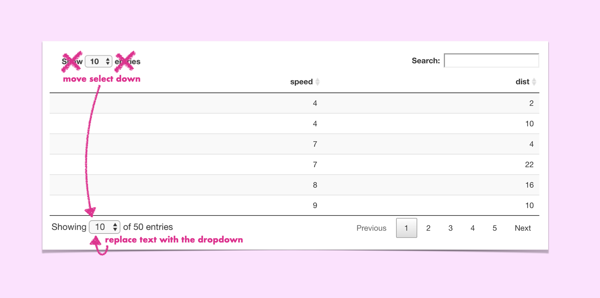

As a Shiny web developer it’s really common to leverage existing packages to create your HTML. But what if a package gets you 90% of where you want to go, and you want to customize it a little?
In this tutorial I give a default DT table a small makeover by combining the datatable’s dataTables_length element and the datatables `dataTables_info element. How did I find the names of these elements? The inspector!
My goal is to combine these into a single element at the bottom of the table:

Given the following Shiny app:
library(shiny)
ui <- fluidPage(
DT::dataTableOutput("table")
)
server <- function(input, output, session) {
output$table <- DT::renderDataTable(
data.frame(cars),
rownames = FALSE,
# I want to scroll the y-axis
# so the table is always the same height
options = list(
scrollY = '50vh'
)
)
}
shinyApp(ui, server)We need to:
dataTables_length as an objectnew_bottom that we will use for our revamped dataTables_infoShowingdataTables_length to the new elemententriesdataTables_info with our new elementdataTables_info class for stylingdataTables_length node from the DOMMy general workflow for applying JS to Shiny apps is to run the application and then actually do my manipulation in the browser’s console.
Using jQuery I stored the select dropdown to the object dropdown by finding the element of class dataTables_length, and then finding the select element inside it
const dropdown = $('.dataTables_length')
.find('label')
.find('select')
Next I created a new DOM element, added the class custom_dropdown to make selecting the node easier, and added the prefix text Showing
let new_bottom = document.createElement('div')
new_bottom.classList.add('custom_dropdown')
new_bottom.innerHTML = 'Showing 'Using jQuery’s append function, we can add the isolated select to our new DOM element:
dropdown.appendTo(new_bottom)And because we’re writing JS as a string in R we can interpolate the nrows number to use in the suffix text of 50 entries
new_bottom.append(' of ' +", nrow(cars), " + ' entries')Now we can replace the existing element with our new custom one!
$('.dataTables_info').replaceWith(new_bottom)We can remove the custom class we added, and give it the class dataTables_info so that the same styling of the old element is applied to our new one.
$('.custom_dropdown')
.removeClass('custom_dropdown')
.addClass('dataTables_info') And now we can remove the dataTables_length element from the DOM!
$('.dataTables_length').remove()The DT function renderDataTable function has a callback argument, a function that is run once the table is rendered. We can apply our JS here as a string:
library(shiny)
ui <- fluidPage(
DT::dataTableOutput("table")
)
server <- function(input, output, session) {
output$table <- DT::renderDataTable(
data.frame(cars),
rownames = FALSE,
options = list(
scrollY = '50vh'
),
callback = DT::JS(paste0("
const dropdown = $('.dataTables_length')
.find('label')
.find('select')
let new_bottom = document.createElement('div')
new_bottom.classList.add('custom_dropdown')
new_bottom.innerHTML = 'Showing '
dropdown.appendTo(new_bottom)
new_bottom.append(' of ' +", nrow(cars), " + ' entries')
$('.dataTables_info')
.replaceWith(new_bottom)
$('.custom_dropdown')
.removeClass('custom_dropdown')
.addClass('dataTables_info')
$('.dataTables_length').remove()"))
)
}
shinyApp(ui, server)Et Viola! It’s a small UI fix that makes a world of difference!
I leverage jQuery here a LOT because Shiny is already loading the library, but vanilla JS can do all of this now. I’m hoping to refactor this code to get more familiar with vanilla JS DOM manipulation: stay tuned for more!